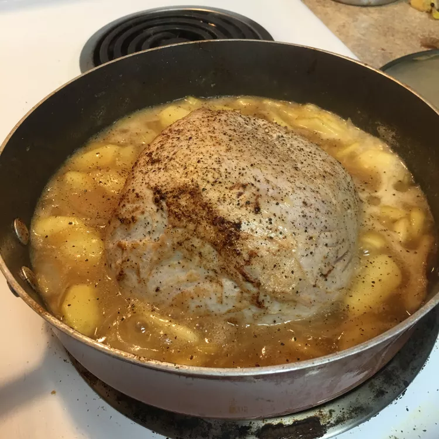

Pork Normandy

It's a family favorite and great for company
I got this pork Normandy recipe from my mother, who learned to make it when we lived in England.
Ingredients
- 1 tablespoon butter
- 1 ½ pounds pork tenderloin
- 1 medium onion, thinly sliced
- 1 large sweet apple - peeled, cored and thinly sliced
- 1 tablespoon all-purpose flour
- 5 ounces chicken stock
- 4 fluid ounces hard apple cider
- salt and pepper to taste
- 2 tablespoons heavy cream
Steps
- Preheat the oven to 350 degrees F (175 degrees C).
- Melt butter in an oven-proof skillet over medium heat. Sear tenderloin in melted butter, then transfer to a
plate.
- Add onions to the skillet; cook and stir for 2 to 3 minutes. Stir in apple and cook until golden brown. Stir
in flour and cook for about 30 seconds.
- Whisk chicken stock and hard cider together in a bowl; pour into the skillet and bring to a boil while
scraping the browned bits of food off the bottom of the pan. Return tenderloin to the skillet; season with
salt and pepper.
- Cover the skillet, transfer to the preheated oven, and bake until pork is slightly pink in the center, about
45 minutes. An instant-read thermometer inserted into the center should read at least 145 degrees F (63
degrees C).
- Transfer tenderloin to a cutting board, and cut into 1 1/2-inch slices.
- Place onions, apples, and all liquid from the skillet into a blender or food processor; pulse until smooth.
Return sauce to the pan, and reheat over medium-low. Stir in cream and heat until warm.
- Spoon sauce over sliced tenderloin to serve.